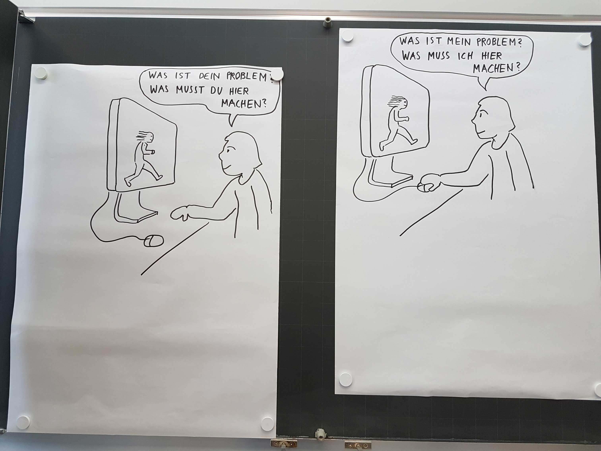
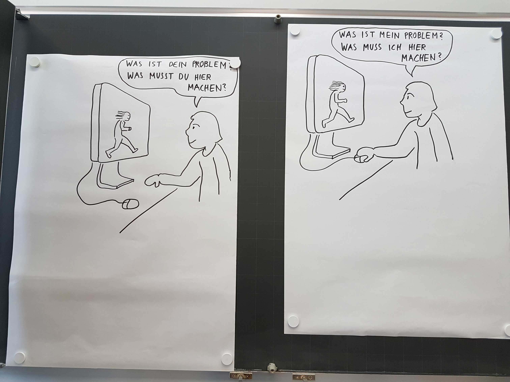

Erste Schritte
Am ersten Tag haben wir uns Gedanken gemacht, was eigentlich eine Erzählung ist. Wo überall begegnen wir Geschichten und Erzählungen und wie werden sie vermittelt? Ein erstes Experiment hat uns aufgezeigt wie man auf eine unkonventionelle Art und Weise eine Geschichte erfinden kann.
26.08.17 – Die menschliche Kamera- Jeder spielt einmal Kameramann oder Kamera, Fotos werden mit den Augen und dem Gedächtniss geschossen.
- Die Fotos werden grob auf ein Dia skizziert und durch weitere Dias ergänzt.
- Zu jedem Dia wird ein Satz geschrieben, so dass eine Story entsteht.
- Die Dias werden mit einer anderen Gruppe ausgetauscht und sie schreiben ebenfalls eine Story dazu.
- Die Storys werden verglichen.
Dramaturgie
Zusätzlich zu unserem Projekt haben wir uns im heutigen Unterricht der Dramaturgie gewidmet. Was mögen wir und was mögen wir überhaupt nicht an einer Geschichte. Jeder konnte Begriffe auf eine Karte schreiben und diese aufhängen. Am Schluss habe wir alles miteinander besprochen und versucht zu verbinden.
Ich gehe hier nun genauer auf meine Meinung ein. Persönlich mag ich es wenn bei einer Geschichte der Aufbau stimmt und es nicht Schlag auf Schlag geht.
Die Figuren müssen immer eine gewisse tiefe haben, ansonsten empfinde ich den Charakter schnell als langweilig und uninteressant, während bei Büchern die Protagonisten oftmals detailliert mit Hintergrundstories versehen werden, fällt dies dem Film oft schwerer. Hauptgrund dürfte offensichtlich die Zeit sein, Serien mit mehreren Staffeln gelingt dies vielfach besser.
Plot Twists faszinieren beim Film und beim Lesen immer wieder aufs Neue. Die komplette Geschichte welche einem erzählt wurde, wird ab diesem Punkt total auf den Kopf gestellt. Viele Details ergeben erst jetzt Sinn und man löst so verwirrende Momente auf. Für mich ein gekonntes Mittel eine Geschichte spannender zu machen.
Was überhaupt nicht geht ist für mich die Langatmigkeit und damit meine ich keinesfalls lange Sequenzen ohne Schnitt oder Dialog. Solche Einstellungen sind für mich nämlich das Grösste, wenn sie gekonnt eingesetzt werden. Nein ich meine hier viel mehr dieses Gefühl von «Kommt mal zum Ende» welches einem überkommt wenn man einen Film schaut. Ist dies der Fall, kann die Story noch so gut sein, es hinterlässt einen fahlen Beigeschmack.
Aufgrund unserer Erkenntnisse haben wir danach die Verschiedenen Arten der Dramaturgie untersucht und sind auf 5 Variationen gekommen:
- Die Normale Dramatik
- Die Epik
- Diverse Handlungsstränge
- Episoden
- Auf etwas hinarbeiten
Am Schluss unseres Nachmittages haben wir uns noch Gedanken dazu gemacht was uns auf Internetseiten hält. Was spricht uns an und verleitet uns dazu auf einer Seite zu verweilen. Die wichtigsten Punkte welche wir in unserer Klasse zusammengetragen haben sind sicherlich:
- Gestaltung und Design
- Navigation
- Nicht zu überladen
- Interaktivität mit Nutzen (Mehrwert)
- Aktion und Reaktion
- Das Ziel
{kind=link}

 

{kind=link}
Storyboard Tag
Heute gab es einen kleinen Einschub zum Thema Storyboard und Kameraführung, was ich persönlich sehr interessant fand und eigentlich gerne auch mehr als ein kleiner Einschub hätte sein können. Basil zeichnete vorne an der Tafel diverse Beispiele der Kameraführung auf und welchen Effekt man damit auslösen kann. Zum Beispiel funktioniert ein Richtungswechsel der Kamera im Spielfilm unglaublich gut um ein Gespräch zwischen zwei Personen darzustellen. Jedoch wäre dieser Richtungswechsel bei einem Fussballspiel eine Katastrophe. Dem Zuschauer wäre plötzlich nicht mehr klar in welche Richtung seine Mannschaft anstürmen muss, falsches Gejubel wäre vorprogrammiert.

{kind=link}